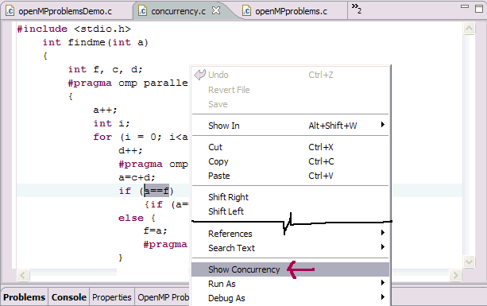
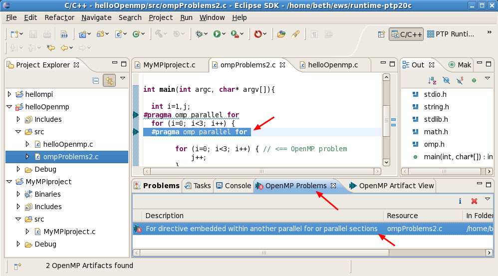

For the most part, the OpenMP tools are similar to the MPI tools. See the setup and run instructions for the MPI tools to see how to configure CDT to find the header files, and compile and run.
You can find OpenMP artifacts, sort the artifacts in the OpenMP artifact view, navigate to source code lines, use hover help, content assist, and bring up a help view on the APIs as well.
The PTP Parallel Language Development Tools do add a few specific functions uniquely for OpenMP development:
In the example screenshot above, OpenMP analysis has been run on the source file and two artifacts were found, one API and one #pragma. They are shown in the "OpenMP Artifact View" near the bottom of the screen. In the OpenMP artifact view, use the context menu on the #pragma item and select "Show pragma region" and the region that the #pragma encompasses is selected and shown in grey in the editor.
 Select a statement, e.g. the statement highlighted in grey above. Select the context menu on the highlighted statement, and click "Show Concurrency" as indicated above. The results are shown below:
Above are the screen-shot results of an analysis, perhaps on a not so real, but at least interesting example. After indicating via the context menu the statement upon which the "Show Concurrency" action is to be executed, other statements will be highlighted in yellow. The meaning is the following: The gray selected statement is analysed for the following: which statements can execute concurrently to it. The result includes all highlighted statements between the two barriers. But because of the conditional jump around the lower barrier, execution could also reach the top of the loop - hitting the condition and the loop increment, as well as the first statement in the loop body. All of those statements are highlighted as well. If correct, this example would usefully point out a bug - being that the second barrier should be outside that if statement!

Along with the analysis for finding OpenMP artifacts, common problems are also located, and shown in the OpenMP Problems view.
Types of problems recognized include: